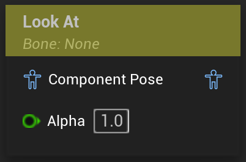

Look At
Look at another location
UAnimGraphNode_LookAt
FAnimNode_LookAt

Rotates one bone to point a specified axis towards a specified location. This location is generally, but not necessarily, relative to some bone.
For any setup, a BoneToModify needs to be specified.
The node will then align the rotation of this bone so that the axis specified in the LookAtAxis will point towards the final target location.
Optionally, if desired a LookUpAxis can be specified, that will be used if UseLookUpAxis is true.
This LookUpAxis will then be treated as immobile, meaning the node will try apply the LookAt as good as possible, without modifying the orientation of the specified axis.
Essentially this means that if the LookAtAxis is (1.0, 0.0, 0.0) and the LookUpAxis is (0.0, 1.0, 0.0), the node will rotate the bone around the Y-Axis(the specified LookUpAxis) to have the X-Axis(the specified LookAtAxis) point towards the target location.
If this bone should look at another bone in the skeleton, this can be specified via the LookAtTarget in the nodes’ details panel.
The LookAtLocation will be treated as relative to the LookAtTarget joint, if one is specified, otherwise it will be interpreted as a world space location.
If the LookAtClamp is effectively greater than 0, the angles of the rotation the node will do will be limited within that range.
The rotation can also be interpolated.
The interpolation works by setting an InterpolationTime and an InterpolationTriggerThreshold.
When interpolating the LookAt, the node will remember a last target location. Only if the new target location is at any point further away from the last remembered location than the InterpolationTriggerThreshold, the interpolation will trigger. The node will remember a new location, which is the location that triggered the interpolation, and interpolate the LookAt over the specified InterpolationTime in seconds.
How the rotation is interpolated can be set via the InterpolationType.
With the exception of the bone references, and the axis related settings, all of the parameters can also be exposed on the node bound to a variable.
Preview bugs when modifying settings of the node
As of UE5.3, when compiling the Animation Blueprint with the LookAtAxis value not being simply axis aligned(like 1.0, 1.0, 0.0 or 0.5, 1.0, 1.0 instead of 1.0, 0.0, 0.0 or 0.0, 1.0, 0.0), the LookAt node will react accordingly. But changing the axis afterwards is not possible anymore.
You will be able to change the numerical values, but they will not be represented in the 3d viewport anymore.
A similar issue can sometimes occur when setting the values of the LookAtLocation after using the translation gizmo in the 3d viewport to modify it.
In this case, sometimes setting the numerical values and compiling the animation blueprint will not change the result in the 3d viewport.
In both cases, closing the Animation Blueprint and opening it again fixes the “unchanged” values, and they should be correctly displayed again.